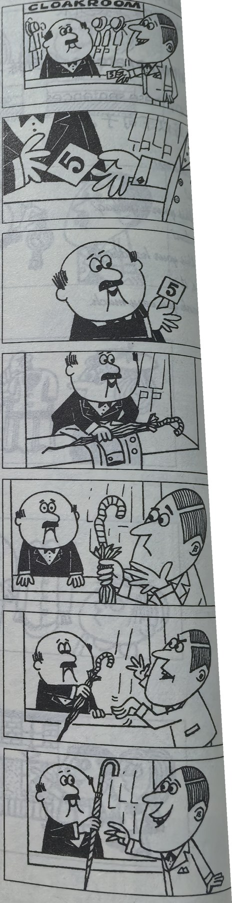
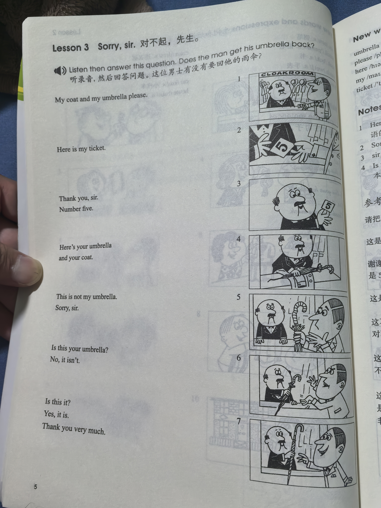
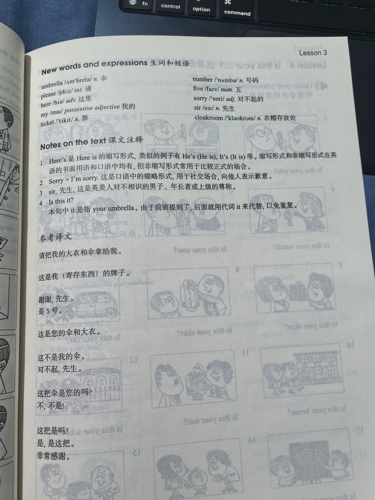

Lesson content · 课文
Lesson 3: Sorry, sir. · 对不起，先生。
Listen then answer this question. 听录音，然后回答问题。
Does the man get his umbrella back?
这位男士有没有要回他的雨伞？
My coat and my umbrella please.
Here is my ticket.
Thank you, sir. Number five.
Here’s your umbrella and your coat.
This is not my umbrella.
Sorry, sir.
Is this your umbrella?
No, it isn’t.
Is this it?
Yes, it is.
Thank you very much.

New words and expressions · 生词和短语
| Word · 单词 | Pronunciation · 音标 | Meaning · 词义 |
|---|---|---|
| umbrella | /ʌmˈbrelə/ | n. 伞 |
| please | /pliːz/ | int. 请 |
| here | /hɪə/ | adv. 这里 |
| my | /maɪ/ | possessive adjective 我的 |
| ticket | /ˈtɪkɪt/ | n. 票 |
| number | /ˈnʌmbə/ | n. 号码 |
| five | /faɪv/ | num. 五 |
| sorry | /ˈsɒri/ | adj. 对不起的 |
| sir | /sɜː/ | n. 先生 |
| cloakroom | /ˈkləʊkrʊm/ | n. 衣帽存放处 |
Notes on the text · 课文注释
- Here’s 是 Here is 的缩写形式，类似的例子有 He’s（He is），It’s（It is）等。缩写形式和非缩写形式在英语的书面用语和口语中均有，但非缩写形式常用于比较正式的场合。
- Sorry = I’m sorry. 这是口语中的缩略形式，用于社交场合，向他人表示歉意。
- sir，先生，这是英美人对不相识的男子、年长者或上级的尊称。
- Is this it? 本句中 it 是指 your umbrella。由于前面提到了，后面就用代词 it 来代替，以免重复。
Chinese translation · 参考译文
请把我的大衣和伞拿给我。
这是我（寄存东西）的牌子。
谢谢，先生。
是5号。
这是您的伞和大衣。
这不是我的伞。
对不起，先生。
这把伞是您的吗？
不，不是！
这把是吗？
是，是这把。
非常感谢。
Practice · 课文练习
Understand the lesson · 课文理解
Comprehension · 理解题
Answer the question about the lesson text. 根据课文回答问题。
-
comprehension: Comprehension · 理解题 — Does the man get his umbrella back?
Practice worksheet · 配套练习
A. Dialogue
Copy this dialogue. 抄写这段对话。
-
worksheet: A. Dialogue — Sue: My coat and my handbag please. Here is my ticket. It’s number ten.
Man: Thank you. Number ten. Here’s your handbag and here’s your coat.
Sue: Thank you very much.
B. Vocabulary
Complete each answer. 完成以下句子。
Example · 例句
Is this your school? — Yes, it is my school.
-
worksheet: B. Vocabulary — Is this your ticket? — Yes, this is my ____.
-
worksheet: B. Vocabulary — Is this your teacher? — Yes, this is my ____.
-
worksheet: B. Vocabulary — Is this your watch? — No, it isn’t my ____.
-
worksheet: B. Vocabulary — Is this your pencil? — Yes, this is my ____.
-
worksheet: B. Vocabulary — Is this your daughter? — No, it isn’t my ____.
-
worksheet: B. Vocabulary — Is this your umbrella? — Yes, it is my ____.
-
worksheet: B. Vocabulary — Is this your suit? — No, this isn’t my ____.
C. Numbers
Write these numbers in figures. 用阿拉伯数字表示以下数词。
Example · 例句
twelve → 12
-
worksheet: C. Numbers — fourteen
-
worksheet: C. Numbers — thirteen
-
worksheet: C. Numbers — eleven
-
worksheet: C. Numbers — ten
-
worksheet: C. Numbers — eight
-
worksheet: C. Numbers — nine
-
worksheet: C. Numbers — fifteen
-
worksheet: C. Numbers — seven
-
worksheet: C. Numbers — two
Original images · 原图对照
Expand a page to compare it with the transcription. Open the original in a new tab to zoom in.
展开原图核对文字，也可以在新标签页打开原图放大查看。
Lesson text and oral practice · 课文与口头练习
Open original · 打开原图 ↗ Download original · 下载原图


Vocabulary, notes and written exercises · 生词、注释与书面练习
Open original · 打开原图 ↗ Download original · 下载原图



Grammar practice · 语法练习
I. Rewrite using short forms
Example: It is a school. -> It's a school.
- It is my book.
- Here is my watch.
- It is not my pen.
- Here is your ticket.
- This is not my suit.
- It is your umbrella.
- This is not my teacher.
- It is my house.
- It is not my shirt.
II. Change the statements into negative forms, then use short forms
Example: This is my teacher. -> This is not my teacher. / This isn't my teacher.
- This is my umbrella.
- It is your ticket.
- This is your suit.
- It is my handbag.
- It is your car.
- This is my son.
- This is my daughter.
- It is my school.
- It is your dress.
III. Give short affirmative answers and then a complete statement
Example: Is this your handbag? -> Yes, it is. It's my handbag.
- Is this my ticket?
- Is this my shirt?
- Is this your house?
- Is this your suit?
- Is this my watch?
- Is this your pen?
- Is this my dress?
- Is this your class?
- Is this my chair?
- Is this your pencil?
- Is this my book?
IV. Give short negative answers, then make statements
Example: Is this your umbrella? -> No, it isn't. It isn't my umbrella. It's your umbrella.
- Is this my skirt?
- Is this your ticket?
- Is this my suit?
- Is this my pencil?
- Is this my book?
- Is this your handbag?
- Is this your coat?
- Is this your watch?
- Is this my pen?
- Is this my dress?
- Is this your house?
Your notes and answers
Use this space for longer responses or exercises that do not have an individual answer box.